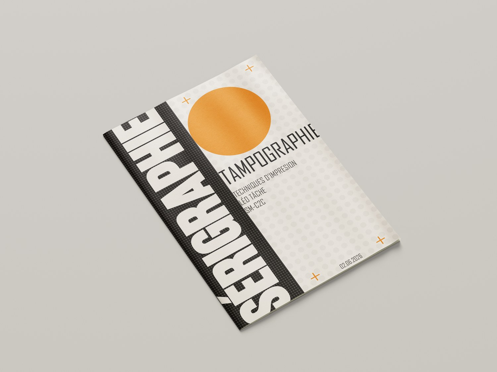
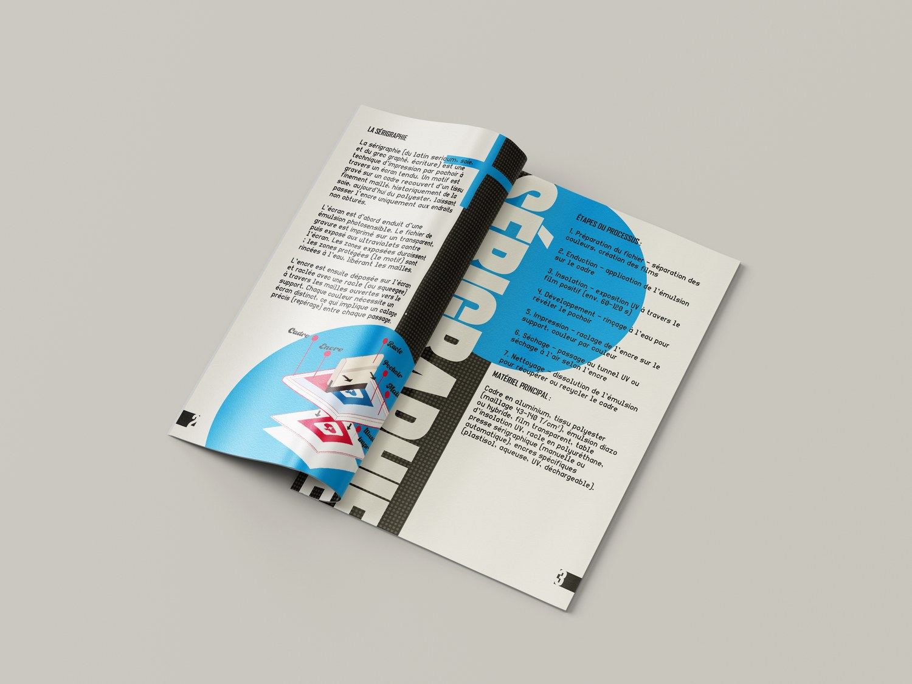
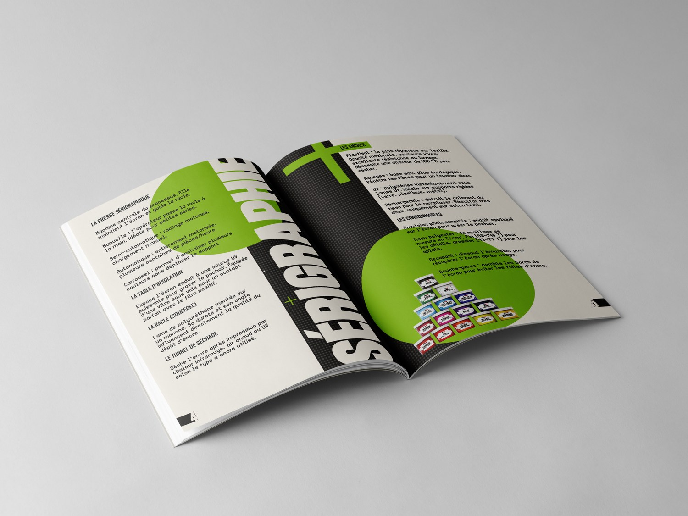
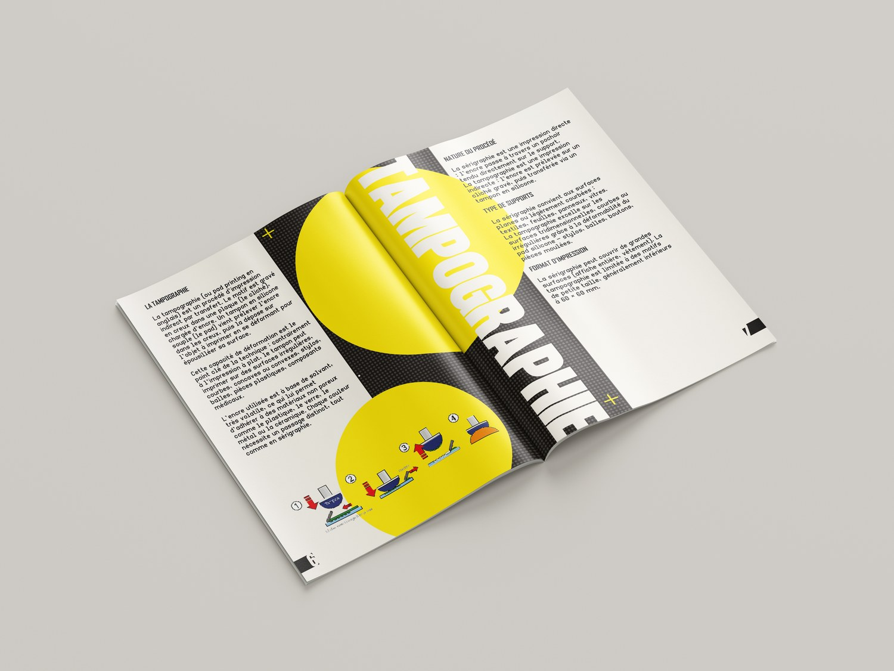
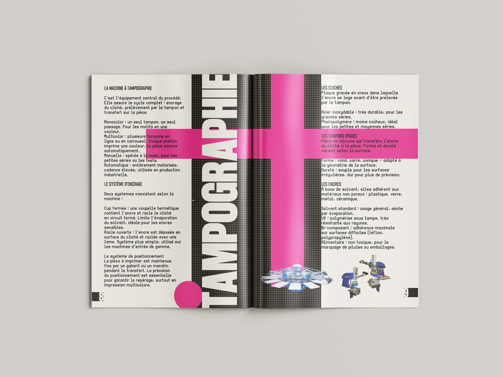
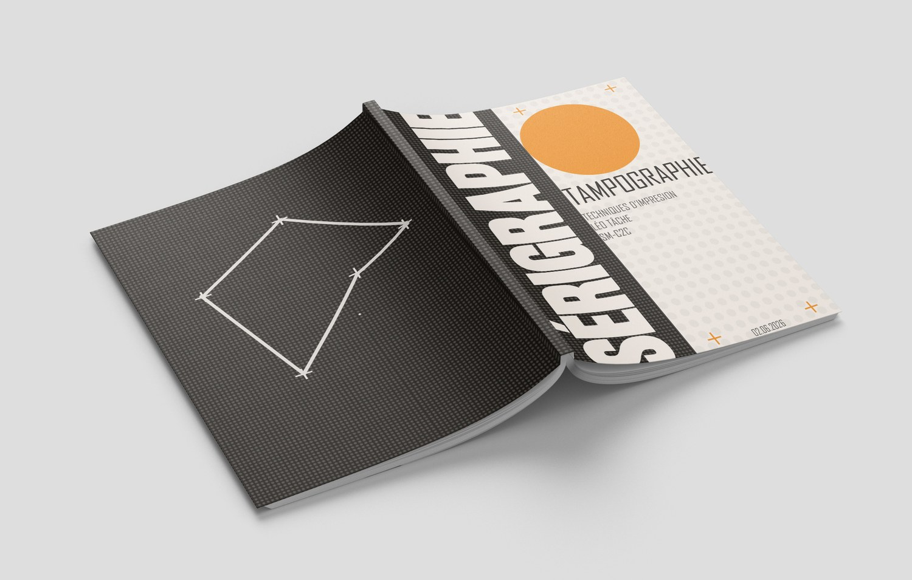
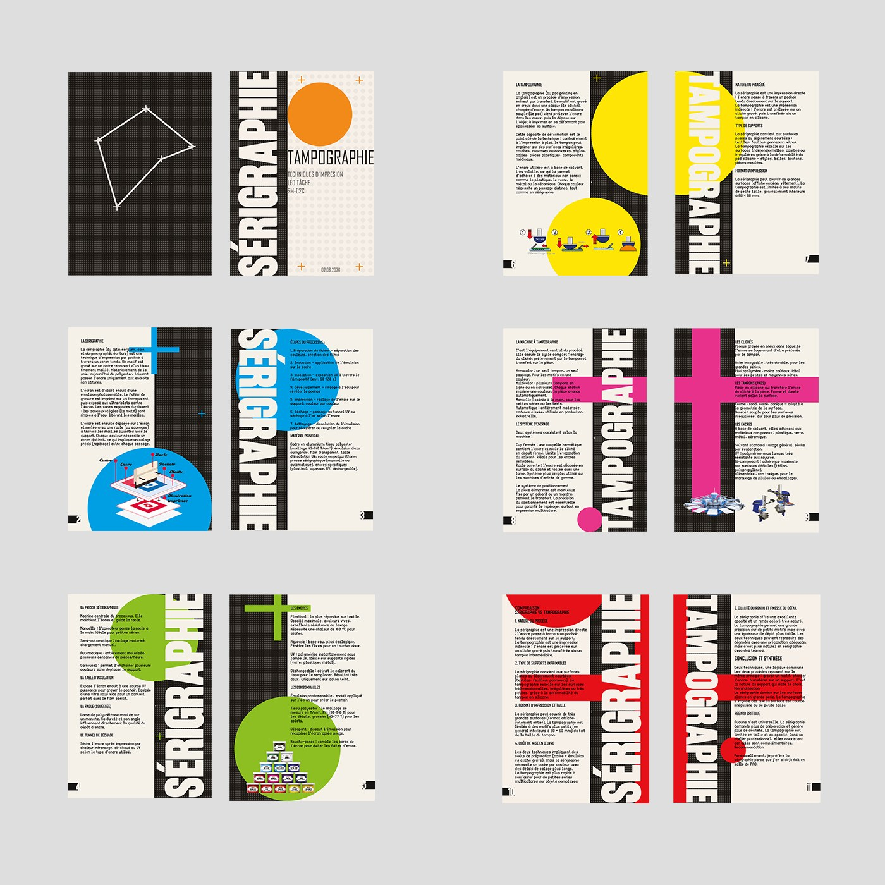

10 Édition, projet scolaire, module SM-C2C, juin 2026
Sérigraphie & Tampographie
Deux techniques, un seul cahier.
Le brief tenait en une phrase : choisir deux techniques d'imprimerie et en faire un cahier d'explication. J'ai pris la sérigraphie, que j'avais déjà pratiquée moi-même, et la tampographie, que je ne connaissais pas et que je trouvais intéressante.
Cinq heures de travail, seul, pour un cahier A5 de douze pages, imprimé et relié. Les informations techniques, je suis allé les chercher.

Le cahier, format A5
01 Le système
La page imite la technique.


Le fond noir piqué de points gris n'est pas une texture décorative. C'est l'écran de sérigraphie : la trame percée qui laisse passer l'encre uniquement aux endroits ouverts. La couleur posée par dessus, c'est l'encre qu'on étale à la racle pour révéler le motif. La mise en page rejoue donc le procédé qu'elle explique, page après page.


02 Le résultat
Un projet réussi.
Ce dont je suis le plus content, c'est l'usage des couleurs : cinq teintes franches tenues sur douze pages sans que l'ensemble se disperse.
Ce que j'aime moins, c'est le motif du dos de couverture. Je n'avais pas d'idée pour cette page, j'ai dessiné un motif pour ne pas la laisser vide. Ça se voit.

Le dos de couverture, et son motif

Les douze pages